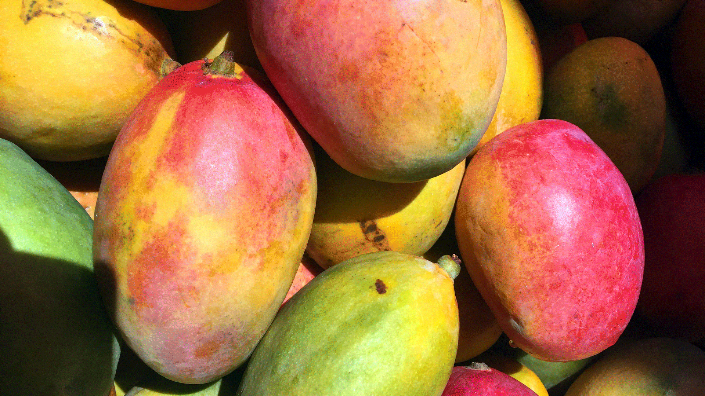
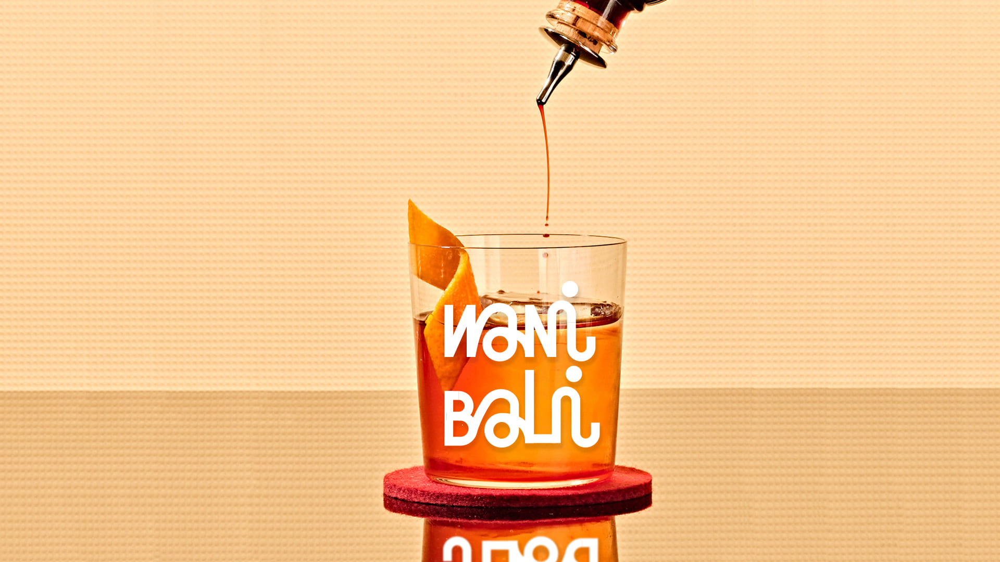
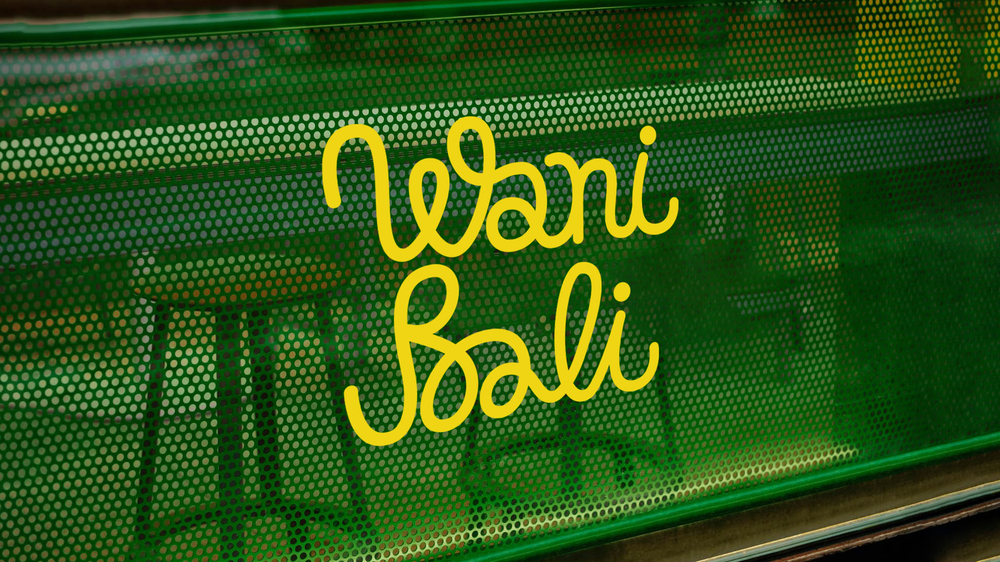
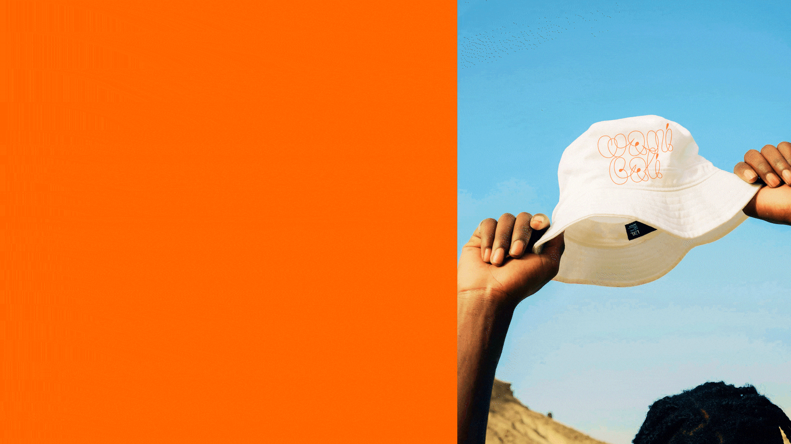
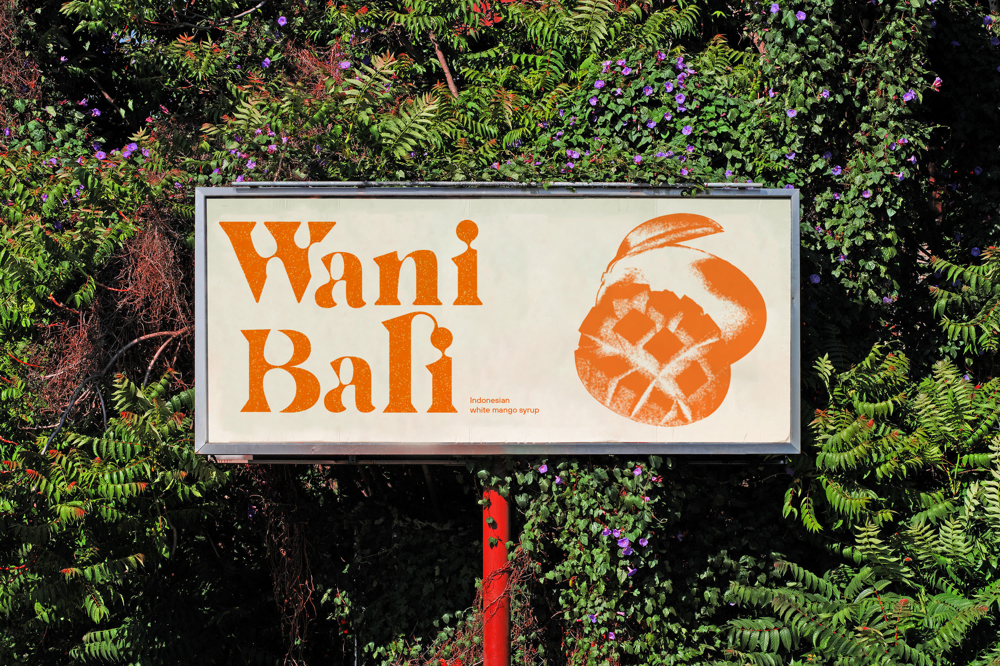
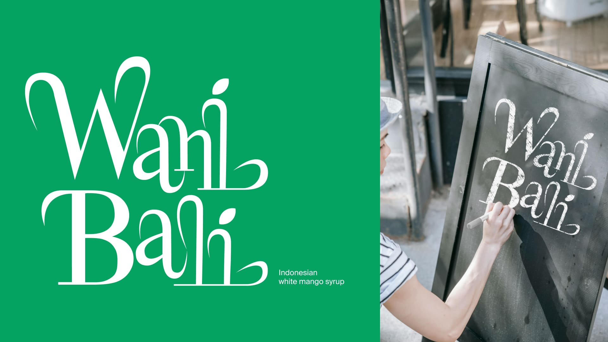
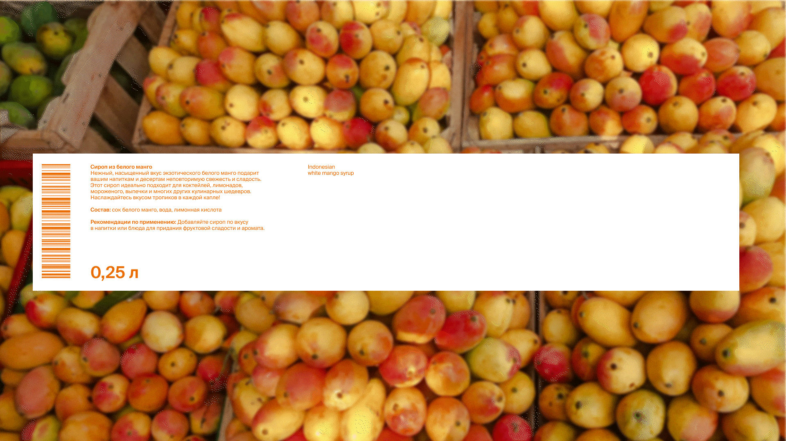
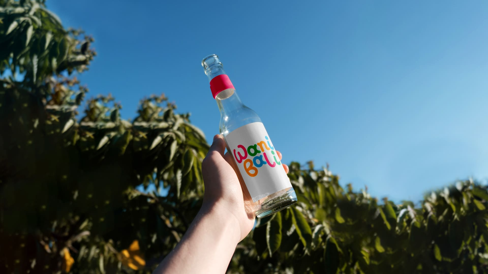
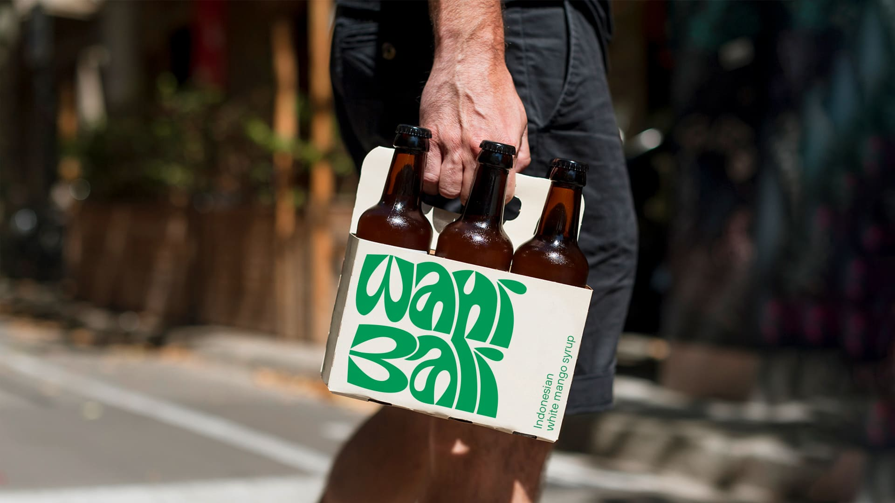
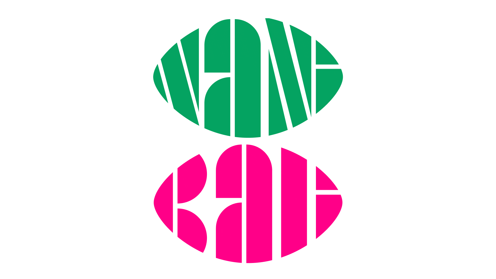

Куратор: Владимир Аносов
Два леттеринга построены на основе шрифтов: Milka, PF Spine Display

Я проходила курс по леттерингу, где нам случайным образом давали тему. Мне достался остров Бали, и я превратила его в бренд сиропов из белого манго.
Название образовано от индонезийского названия фрукта Wani Biji и острова, на котором растут белые манго. Леттеринг в логотипах отсылает к беспечной жизни на Бали, а также вкусовым качествам сиропа









Написать мне можно через телеграм или по почте ksushashibova@gmail.com. Пока!
Я сделала этот сайт, использя HTML, CSS, a c JS мне помогла нейросеть.
Да, он неидеален, но надо же было с чего-то начать?